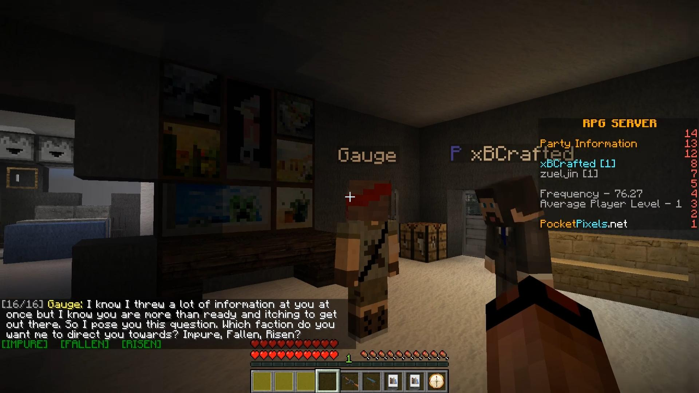

Hi! I'm Dominik "domisum" Weissenseel, a Software Developer. This is my portfolio, take a look around!
What I can do
I can do stuff! This is a general overview of what I can do. It is easy to say that I'm proficient at something, but I'll back up my claims in the section about my previous projects.
I consider myself to be a backend developer. I have done work on user GUIs and apps, but I mainly work on and enjoy creating high performance, high-quality server software.
Experience with Technologies
- Java: Expert level
- SQL/mySQL: Advanced level
- noSQL/MongoDB: Advanced level
- Redis: Intermediate level
- HTTP: Advanced level
- JSON: Expert level
- HTML, CSS, JavaScript: Intermediate level
- git: Advanced level
- Maven: Advanced level
Experience with Java Frameworks/Libraries/APIs
- Spigot API: Expert level
- NMS: Advanced level
- Guice Dependency Injection: Advanced level
- Gson: Advanced level
- JavaFX: Advanced level
- BungeeCord API: Intermediate level
My development practices and habits
I use git as version control for every single project. My commits are usually granular. I practice continuous integration and often use automated, continuous deployment with my software projects. To avoid putting faulty code into production, I use Test-Driven Development to eliminate programming errors and to prevent regression errors.
I am proficient at interface abstraction and regularly use interface classes to put it into practice.
I add comments to my code when necessary, but I try to avoid comments by refactoring wherever possible. This makes my code highly readable and easy to understand at first glance.
Many of my projects, especially the more complex ones, make use of dependency injection and injection frameworks on a large scale.
I can create robust and clean software following the Java coding standards.
Previous projects
domisumReplay
domisumReplay is a software project that generates YouTube videos of League of Legends pro player replays.
The architecture is split between server and client, the server finds and selects the replays, the client records and uploads them. This architectural split was chosen to allow multiple recordings by having multiple clients running at the same time.
Communication between client and server is handled via HTTP(S). Data is mainly sent in JSON format. Both the client and the server use Gson for JSON serialization. The traffic is securely encrypted using a HTTPS reverse proxy on the server.
The server collects match and player information from the RiotAPI, with which it evaluates and selects interesting matches. The match and player data is saved using MongoDB. Statistics gathered from the matches are cached using Redis. The size of the codebase is about 29k lines of code split into about 800 classes. Dependency management is performed by Maven. Dependency injections are done using Guice.
The client controls the League of Legends spectator client and the recording software OBS with simulated keypresses.
The application automatically generates video titles, thumbnails and descriptions for each video and highlights the most important events in them.
Displaying the images over the gameplay is accomplished using a transparent website displayed above the game footage. The site is programmed to fade in and fade out images it receives from the Java application. The web server is written in Java as well.
Uploading the videos to YouTube is fully automated using the YouTube-Data-API and a mock YouTube browser client since some required features such as end screens and enabling monetization are not supported in the official API. The high-level YouTube-API used in domisumReplay is available as open-source: YouTubeVideoUploadLib
The graphics used in the video and in the metadata (rune-page info, item build, skill order, and video thumbnail) are generated using a simple, self-written image library.
The video above is one of the many videos this software project has generated.
InfinityLoop
Infinity Loop is a JavaFX clone of the popular game app with the same name. I programmed it as an exercise in creating GUIs and programming fast puzzle-solving algorithms.
The application has 1.2k lines of code and contains 19 classes.
The goal of the game is to solve levels by rotating tiles until all ends are connected. To rotate a tile, click it.
To play the game you can download the source code from the link above and run the application from the main class MainGUI.java in your preferred IDE. You can also download a pre-built executable from here: InfinityLoop.jar download
The buttons on the right have the following functionality:
- Folder: Load a board from a file
- Floppy disk: Save the current board to a file
- Shuffle arrows: Generate a new, random board
- Light bulb: Solve the current board automatically
- Big screen: Switch application to fullscreen mode
- Windows: Switch application to windowed mode
The algorithm for solving the board is written recursively and has great performance even with big boards.
Previous projects: Minecraft
I have extensive experience working on Minecraft plugins, written in Java and using the Spigot/Bukkit-API. Some of the projects listed use internal NMS code. Here are a selected few of my projects:
Afflicted RPG
Afflicted is a RPG game mode set in a post-apocalyptic Minecraft world, overrun by zombies.
The plugin added many features to the game. It added weapons (including machine guns, sniper rifles, and flamethrowers) and randomly generated add-ons for the weapons (examples: grenade launcher, reduced reload duration, short timeframe of invulnerability, homing rockets and many more).
It also added NPCs and quests, which could be created and modified using simple JSON configuration files. Quests are created from components, which could give the player the task to talk to NPCs, kill monsters or collect and deliver monster drops. Quests can have multiple paths and multiple endings. Conversations with NPCs sometimes give the player options to make a choice which they can accept by clicking a button in chat. An example of this is shown in the screenshot below.
The game also includes other features to tie everything together: A party system, currency for upgrading add-ons, poisonous zombie corpses and a quest book with a quest tracker.
The players in the world would regularly fight hordes of zombies, which all had custom gear and special abilities. Commander zombies can summon reinforcements, Spitters can throw highly accurate potions at the players, Zappers can explode, Chargers run at the player to throw them in the air and Diggers dig into the ground to tunnel closer to the player.
Player status is saved using MongoDB, which allows the game to run on multiple game servers and sync up the player progress.
The plugin has 16.6k lines of code and 235 classes. It was developed for the server PocketPixels (Proprietary code).
ThroneGames
ThroneGames is a minigame where you fight other players in a 1v1 tournament, the winners of each 1v1 advancing to the next round of 1v1s. Every round has different fighting equipment.
The plugin has 3.3k lines of code and was developed for the server TheParkMC (Proprietary code).
UHCGames
UHCGames is a mix between UHC and SurvivalGames.
The plugin has 4.0k lines of code and was developed for the server TheParkMC (Proprietary code).
ShotEm
ShotEm is a simple minigame requiring the player to shoot NPCs that spawn further and further away.
The plugin has 1.8k lines of code and was developed for the server TheParkMC (Proprietary code). The skins of the target players and the game scores are stored using MySQL.